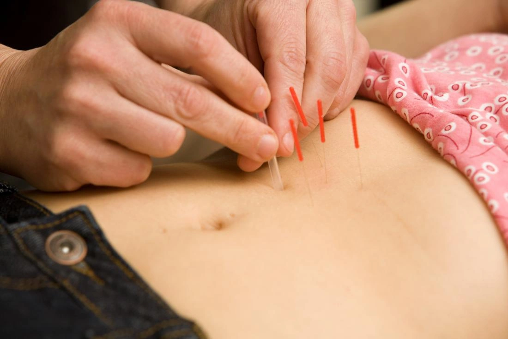
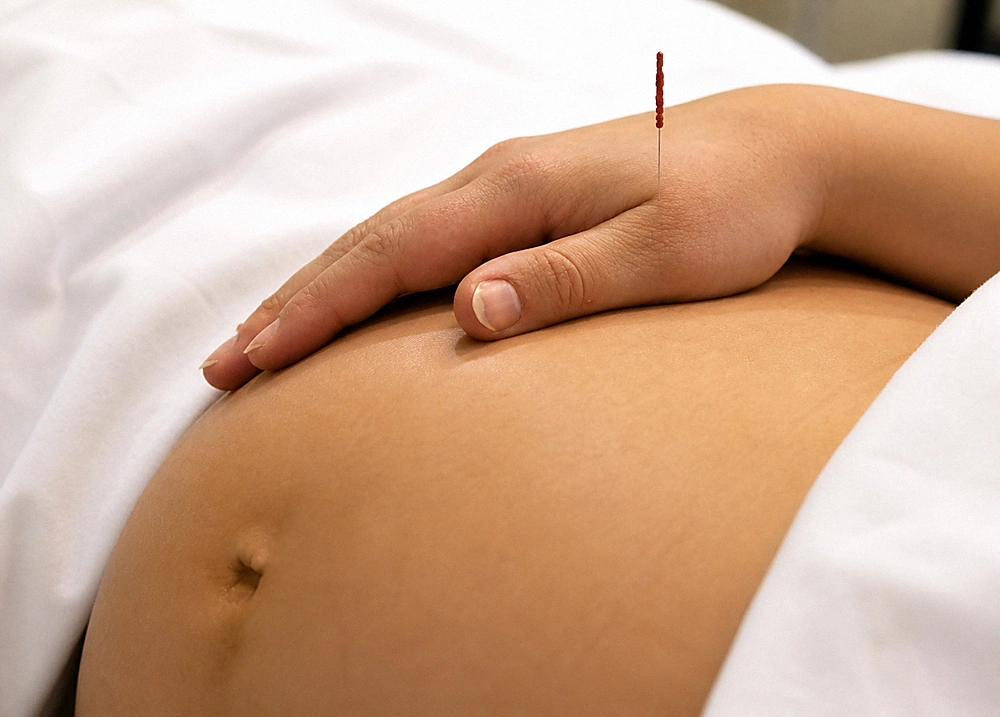
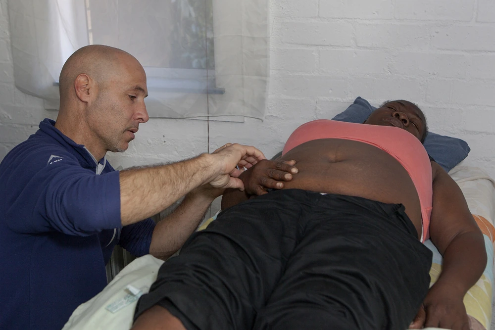
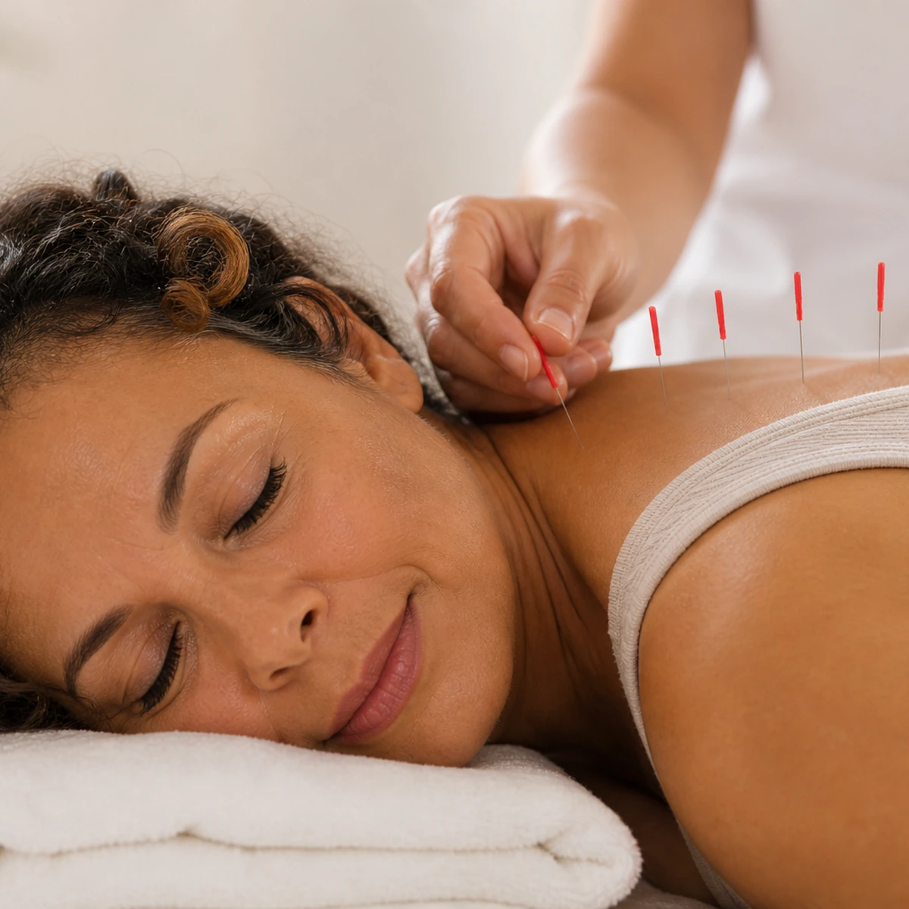
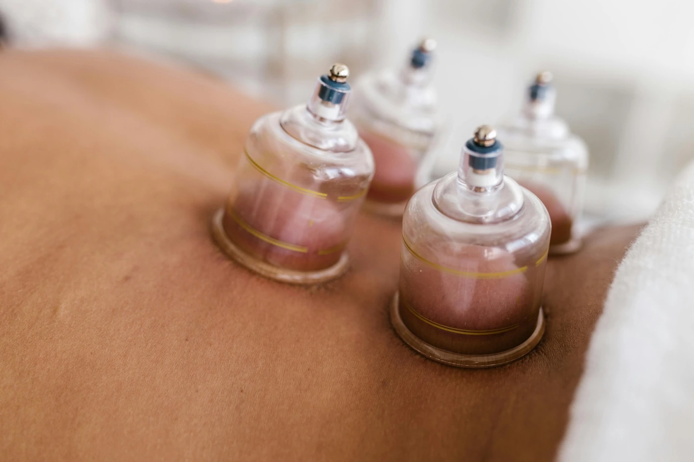

Find the support you need
Acupuncture works with your whole body — not just the symptom. Whatever has brought you here, you are welcome.

Back, Neck & Shoulder Pain
Persistent pain that won't let up. Acupuncture helps ease tension, restore movement, and supports your body's natural healing.
Learn moreMigraines & Headaches
Recurring headaches can disrupt your life. Acupuncture targets the root patterns to ease the cause, not just the pain.
Learn moreStress, Anxiety, Sleep & Burnout
When your nervous system is overwhelmed, acupuncture can support your restorative reset — body and mind together.
Learn more
Fertility Support
Compassionate, whole-person support on your fertility journey — whether trying naturally or alongside IVF.
Learn more
Pregnancy & Birth Support
Gentle support through every stage of pregnancy — from nausea and fatigue to birth preparation and natural induction.
Learn more
PMS & Hormonal Health
You don't have to just push through every month. Acupuncture gently supports your cycle and hormonal balance.
Learn more
Menopause & Peri-Menopause
This transition deserves real support. Acupuncture helps ease symptoms and restore more balance in your body.
Learn moreChronic Conditions
Supportive whole-person care alongside your existing medical treatment — for sustainable, steady wellbeing.
Learn more
Cupping & Other Treatments
Complementary modalities that work alongside acupuncture to deepen the treatment and support your healing.
Learn moreNot sure where to start? Just reach out — Shaul will help you find the right path.